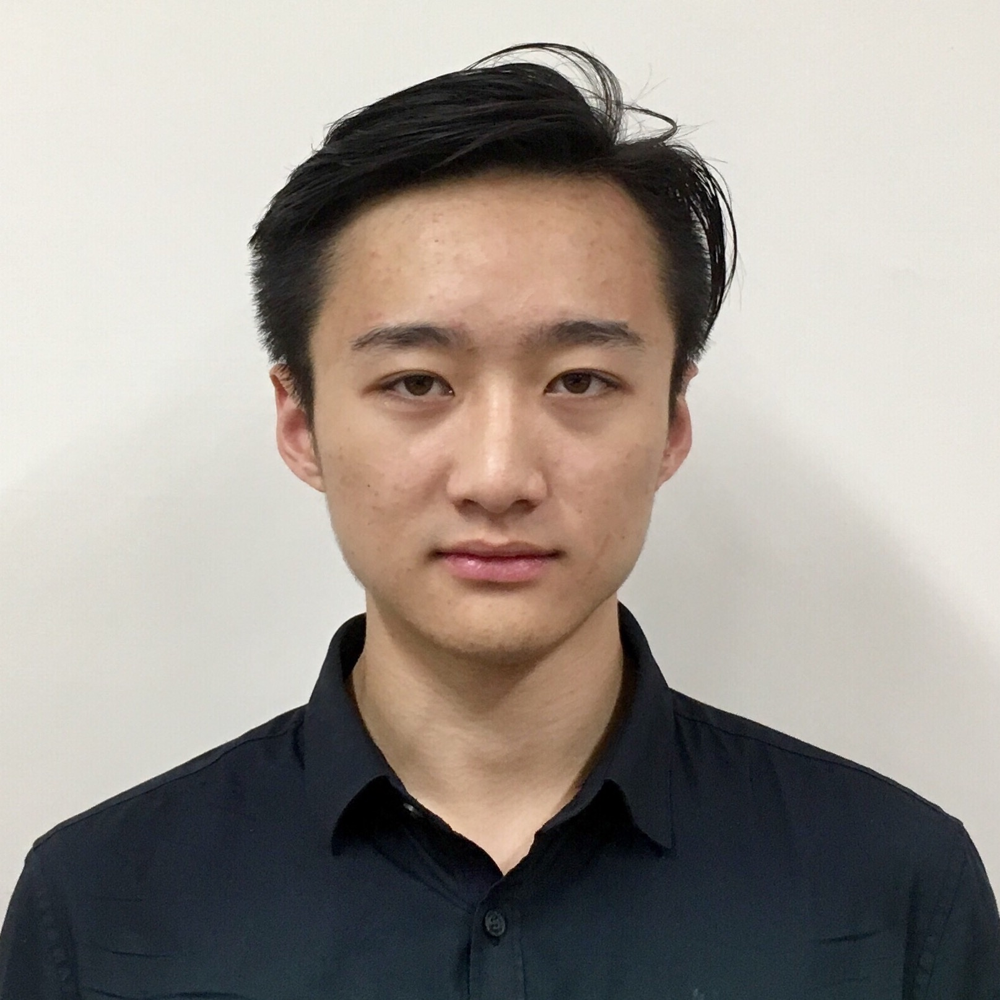

Bosen Yang
Favorite Music Pieces:
- Beethoven, Symphony No.9
conducted by
Leonard Bernstein
- Dvořák, Symphony No.9
conducted by
Sergiu Celibidache
- Beethoven, Symphony No.7
conducted by
Carlos Kleiber
- Bach, Goldberg Variations
played by
Glenn Gould
Contact Info
Tel:(86)18080451339
E-mail:by570@nyu.edu
WeChat:bursen
Instagram:burson555